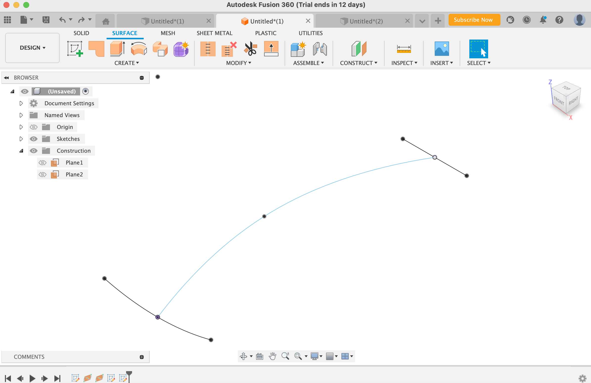
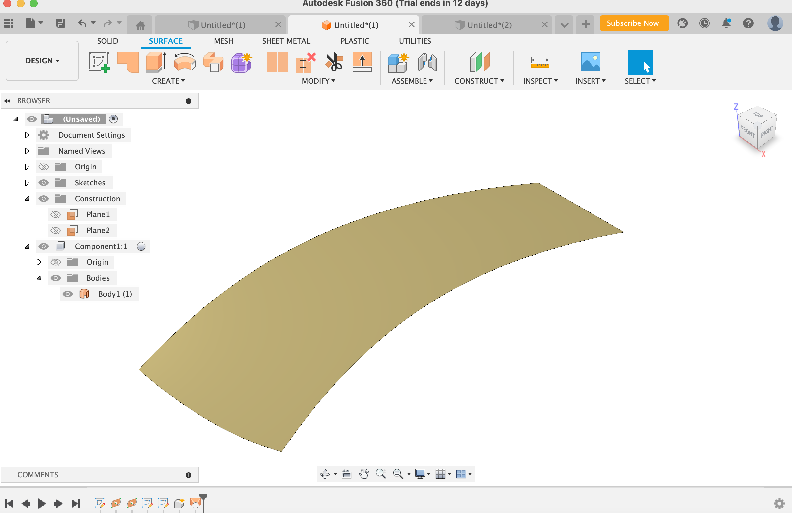
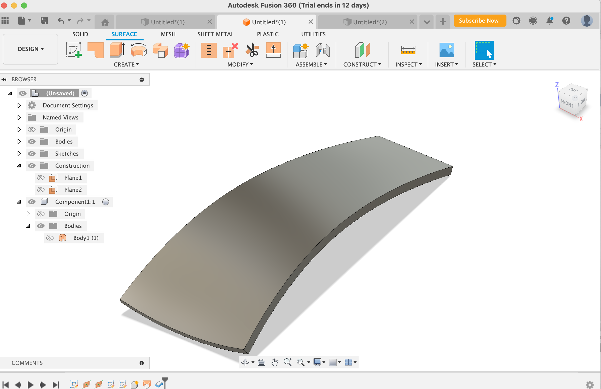
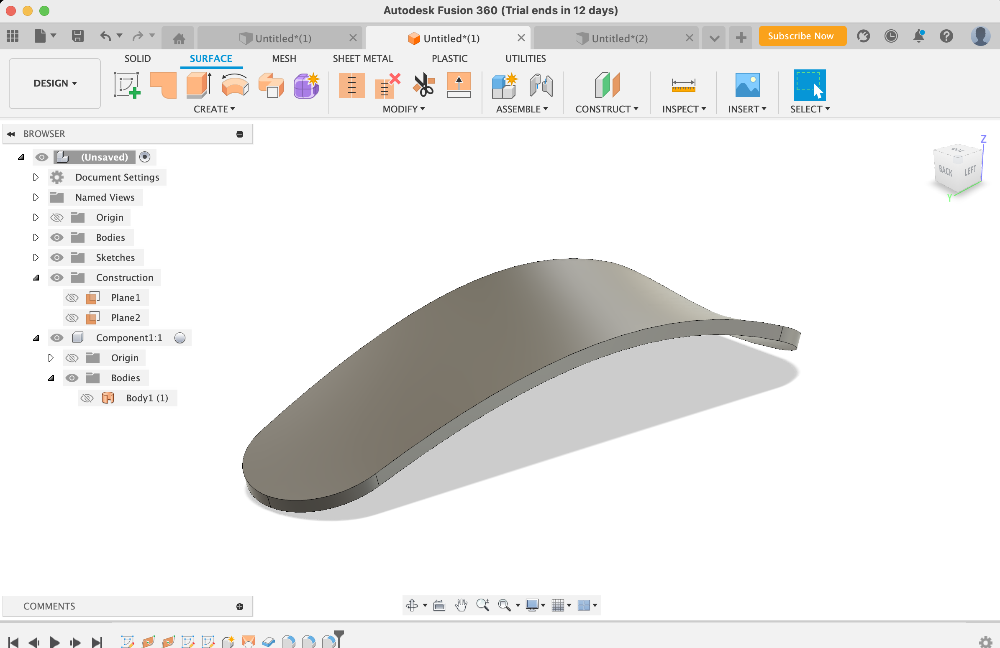
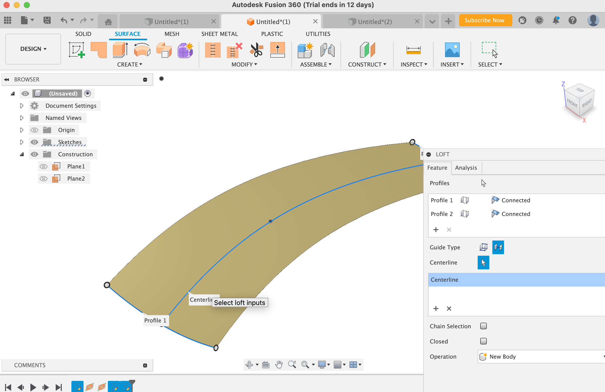
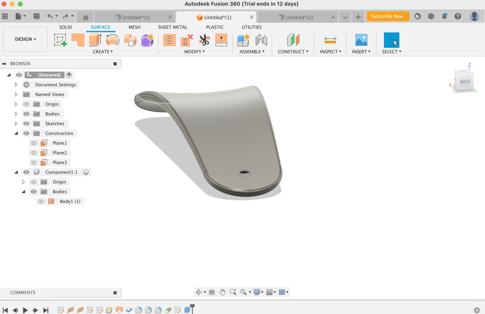
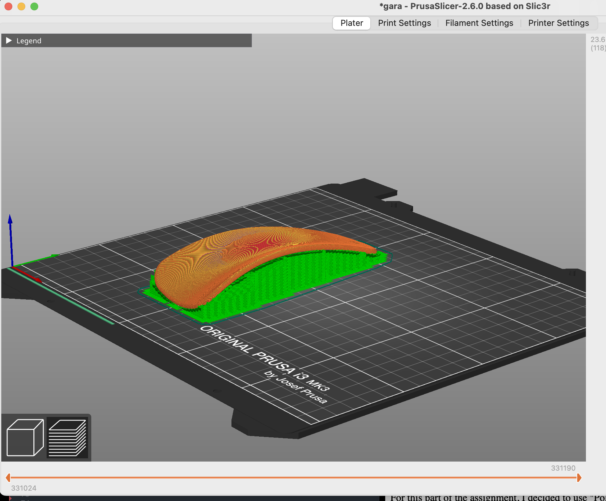

Assignment #1 "The Shoe Horn"
For this weeks assignment we had to design and print either a component that could be use for the final project or a small object that could not be easily made by substractive method. Then, we had to scan something using any photogrammetry application.
Materials Used
Prusa Slicer Software, Fusion 360, 3D Printer
Introduction
I really wanted to think broader and design something I could adapt to a challenge that perhaps I face throughout the day. Then, I thought that sometimes when I put a shoe that is too rigid, makes it hard to put it on. That is why, I created a shoe horn with the hope to fix this problem.
The process.
     
Using Prusa Slicer
3D Printer